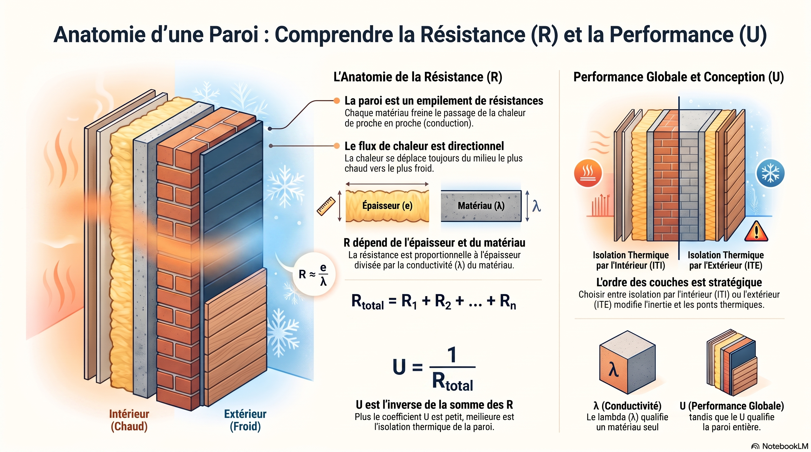
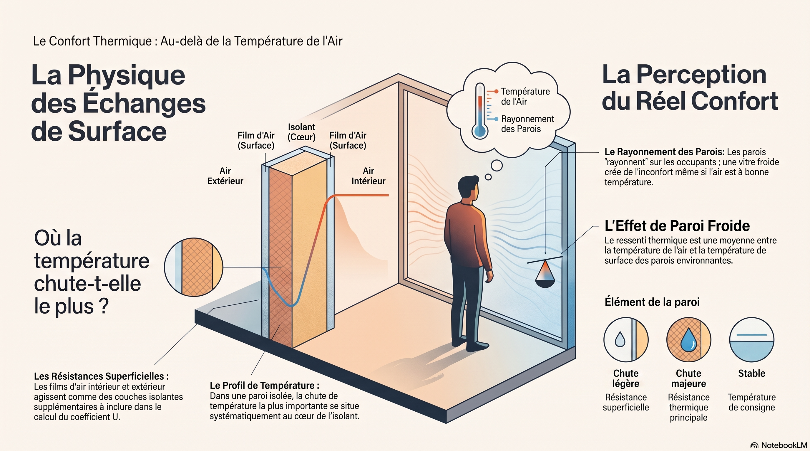
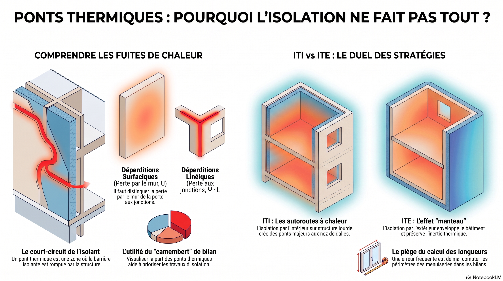
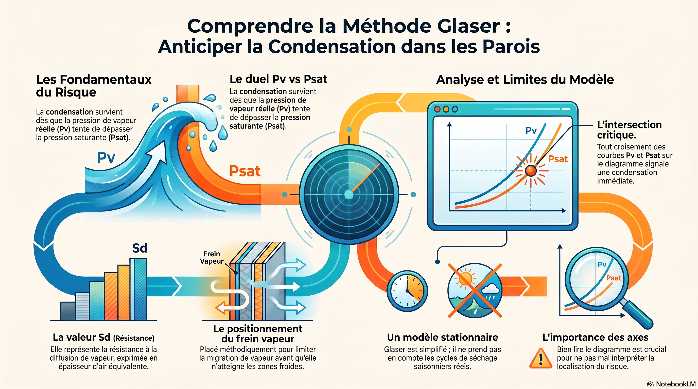
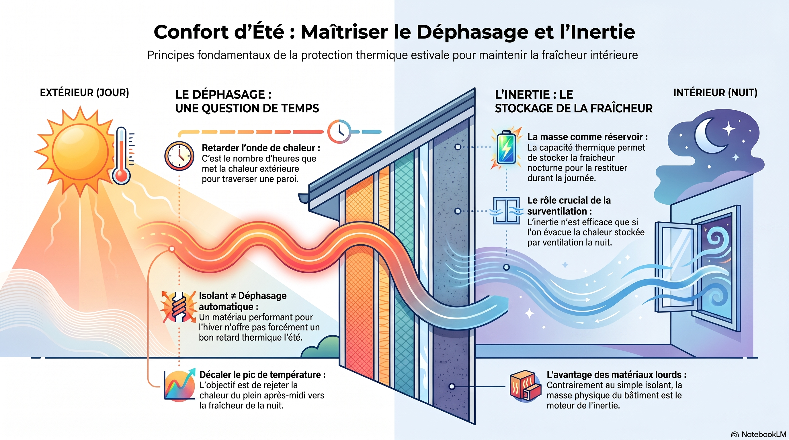
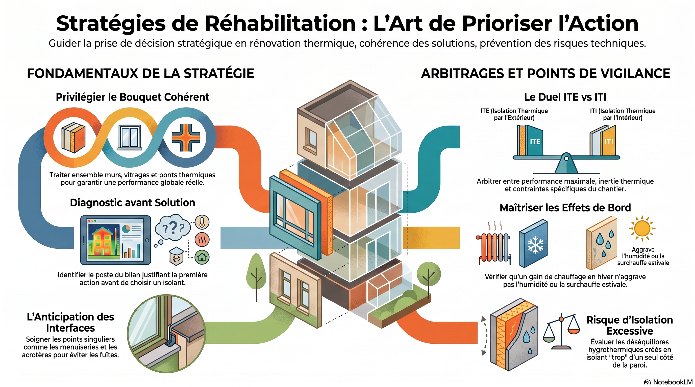

R 2-9
Transferts thermiques et hydriques
Parois, confort, Glaser, ITI / ITE
Entraînement : Halle de Valvert
Cliquez une image pour l’ouvrir en grand.






1re année · BUT GC-CD
Transferts thermiques et hydriques. Ouvrez un laboratoire, consultez les infographies, ou lancez les vidéos lorsqu’un lien est proposé.
R 2-9
Parois, confort, Glaser, ITI / ITE
Entraînement : Halle de Valvert
Cliquez une image pour l’ouvrir en grand.





